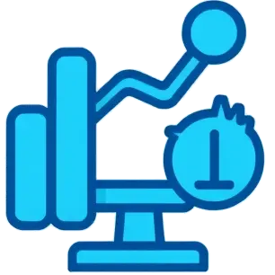

Je suis Mickael Gaillard
Je recherche un contrat d'apprentissage pour septembre,
au rythme d'1 semaine à l'école / 2 en entreprise.
L’alternance est un échange ! Je viens avec mes compétences et ma motivation. Vous m’aidez à affiner et approfondir mes pratiques, à comprendre les réalités du métier et à devenir un professionnel à part entière.
Ensemble, on gagne du temps : je me forme, et je m’investis pleinement pour contribuer à vos projets.
🎯Ce que je vous apporte : La curiosité, l'esprit d’équipe, l'envie d’apprendre, SQL, Power BI, Python.
🔥Pourquoi moi ? Je code, comprends vos enjeux métiers, et veux appliquer vos standards.
💡Je cherche :Un mentorat, des projets concrets, une entreprise qui investit dans ses alternants.
Parcours
Passionné par la data et l’IA, je poursuis un MBA Big Data à My Digital School pour transformer ma curiosité en compétences concrètes.
✅ Outils : Python, SQL (relationnel & NoSQL), Power BI, NumPy, Pandas.
✅ Réalisations : projets concrets en analyse, modélisation & visualisation de données
✅ Mon objectif : dépasser les chiffres pour proposer des solutions actionnables et utiles aux enjeux métiers.
🚀 Ce que je recherche : une alternance, un mentorat fort et des projets qui feront de moi un collaborateur clé.
Ensemble, transformons vos données en leviers stratégiques !
Formation
Marketing digital, Copywriting
2025LiveMentor
MongoDB, PostgreSQL et SEO
2024Udemy
Concepteur Développeur d'Applis
2022-23AFPA
Développement Full-stack
2018-21AFPA
Cybersécurité
2018-22Udemy
Préparation d'un BTS SIO SLAM
2020-22CNED

Analyser, exploiter, structurer, traiter l'information
Power BI, Excel, Google Sheets
Préparation, nettoyage, visualisation, exploration des données
Modéliser, gérer et enrichir des bases de données
Modèles : SQL, Transact-SQL, NoSQL.
SGBD : SQL Server, PostgreSQL, MariaDB, MySQL, MongoDB
Programmation Data
Python, M, DAX, NumpPy, Pandas, Keras
MLOps & Développement
Jupyter Notebook, Google Colab
Visual Studio Code, PyCharm
Data Science et Machine Learning
Numpy, Pandas, Keras, Scikit-Learn, Matplotlib.
Préparation, nettoyage de données,
Modélisation supervisée (classification, régression)
Sécurité
Enjeux éthiques et réglementaires de l’IA
Ingénierie sociale
Gestion de projet et de collaboration
Evernote, Xmind, Notion, Trello, Adobe Express, Figma, Adobe XD
Les Intelligences Artificielles
L'intelligence artificielle, c'est toute technologie informatique capable d'imiter des processus cognitifs humains afin de résoudre des problèmes complexes.
La Data Science
Discipline alliant statistiques, mathématiques et informatique pour analyser, nettoyer et exploiter des données, en utilisant l’apprentissage automatique pour guider les décisions et prévoir des tendances.
Machine Learning
C'est un sous-domaine de l'intelligence artificielle permettant à un système d'apprendre automatiquement à partir de données, sans être explicitement programmé, afin de faire des prédictions ou prendre des décisions.
La Business Intelligence
C'est une ensemble de technologies, processus et méthodologies permettant la collecte, l'analyse et la transformation des données brutes en informations significatives.
Power BI
Transformation (Power Query), modélisation (data model, DAX), visualisation (PowerView, rapports interactifs) et automatisation (Power BI Service, actualisation). J’illustre ma capacité à transformer des données complexes en insights clairs et décisionnels
SQL Server
Microsoft SQL Server est un SGBDR multibase et multischéma permettant des requêtes nativement interbases avec Transact-SQL.
PostgreSQL
Système de gestion de base de données relationnel-objet (SGBDRO) open source et gratuit avec fonctionnalités SQL avancées.
Python
Projets Python incluant le machine learning, un projet d'IA générative,
et Django.
Mongo DB
Projets en NoSQL (Not Only SQL) pour les bases de données non relationnelles conçues pour stocker et gérer de gros volumes de données de façon flexible, sans schéma fixe.
Je suis conscient que votre temps est précieux.
La sécurité et l'éthique me tiennent à cœur.
C'est pourquoi, je vous invite à me contacter via linkedin.
Cela garanti un échange sécurisé et professionnel ainsi qu'une bonne gestion de nos données personnelles.
Si mon profil vous intéresse. n’hésitez pas à me contacter
Ce sera un plaisir d'échanger avec vous.